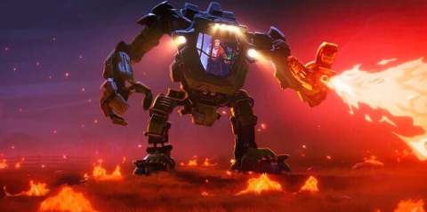

Love Death + Robots
watchEpisodes

In the hidden world of "beastie" fights, Sonnie is unstoppable, as long as she manages to keep her edge.

Long after humanity's collapse, three robots set out on a sightseeing tour of a post-apocalyptic city.

After witnessing a murder, a woman goes on the run through the streets of a surreal city in an attempt to escape the killer.

A community of farmers make use of their homemade mechs to fight off an alien invasion that threatens their families.

Freed during an archaeological dig, a bloodthirsty demon fights against a gang of mercenaries equipped with cats.
After scientists mistakenly create super-intelligent yoghurt, it soon grows hungry for world domination.